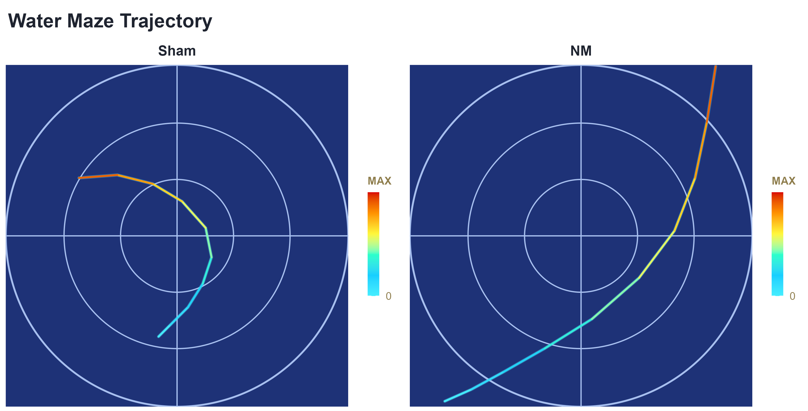
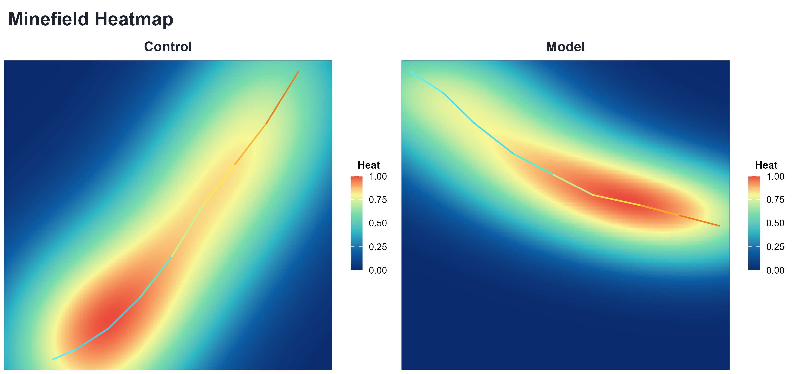
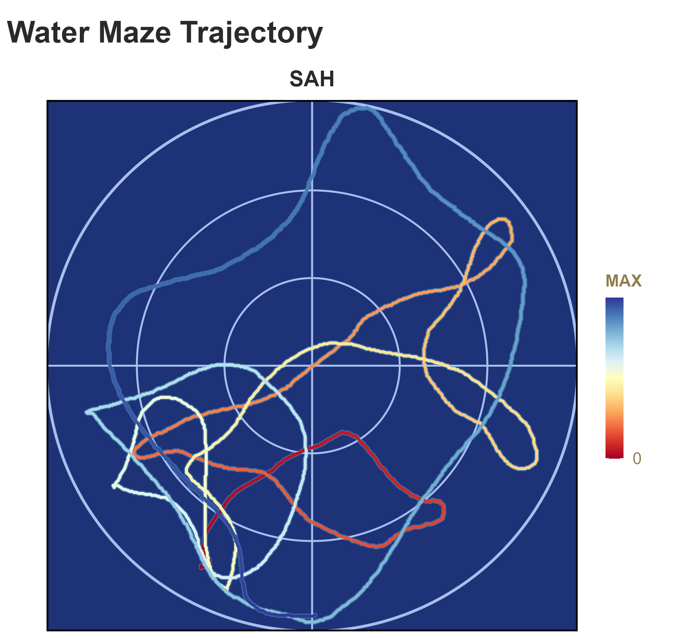
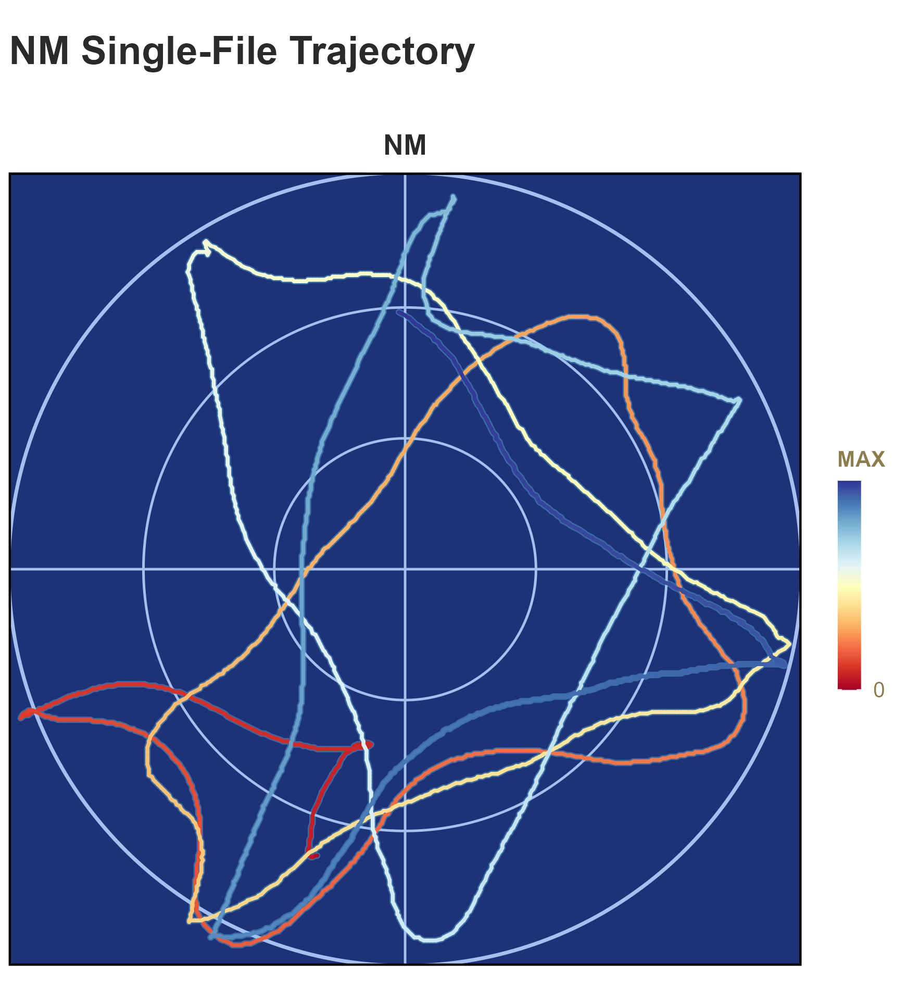

R-first toolkit for automatic visualization of water maze and minefield trajectory tasks.
MMV focuses on: - a unified CSV schema - explicit legacy-to-standard CSV conversion - two direct plotting functions - thisplot-style theme integration with builtin fallback
Visual Preview
| Water Maze | Minefield |
|---|---|
 |
 |
Real legacy-file examples (your raw coordinate style):
| SAH (Legacy CSV) | NM (Legacy CSV) |
|---|---|
 |
 |
Install
install.packages("remotes")
remotes::install_github("hurry060215-tech/MMV")
library(MMV)Optional dependencies:
install.packages(c("ggplot2", "dplyr", "cowplot", "testthat", "yaml"))Quick Demo (Copy and Run)
wm_csv <- system.file("templates", "watermaze_template.csv", package = "MMV")
mf_csv <- system.file("templates", "minefield_template.csv", package = "MMV")
# 1) Convert to standard schema (recommended)
cnv <- convert_mmviz_csv(
path = wm_csv,
out_path = "outputs/watermaze_template_standard.csv",
task = "watermaze",
overwrite = TRUE
)
# 2) Water maze (line-gradient trajectory, non-gradient background)
plot_watermaze(
cnv$output_file,
cfg = list(
style_mode = "thisplot",
plot_mode = "line_gradient",
out_file = "outputs/watermaze_demo.png"
)
)
# 3) Minefield (heatmap + optional trajectory overlay)
plot_minefield(
mf_csv,
cfg = list(
style_mode = "thisplot",
overlay_trajectory = TRUE,
out_file = "outputs/minefield_demo.png"
)
)Development-mode example script:
source("inst/examples/example_usage.R")Helper scripts: - inst/examples/example_usage.R: minimal end-to-end example. - scripts/run_examples.R: template conversion + watermaze + minefield + batch.
Regenerate README Example Figures
source("scripts/build_readme_examples.R")This script writes: - inst/examples/figures/watermaze_demo.png - inst/examples/figures/minefield_demo.png
Input Schema
Required columns: - subject_id - group - trial_id - frame - x - y
Optional columns: - time_sec - event
Legacy coordinate-stream CSV is also supported (for example: "233,135","233,135",...).
Main Functions
convert_mmviz_csv(path, out_path = NULL, task = "watermaze", overwrite = FALSE)convert_mmviz_folder(input_dir, out_dir, task = "watermaze", ...)plot_watermaze(input, cfg = list())plot_minefield(input, cfg = list())plot_batch(manifest, out_dir, cfg = list())
Style Modes
-
style_mode = "thisplot": usethisplot::theme_this()andthisplot::palette_colors()when available. -
style_mode = "builtin": internal fallback palette/theme.
Default is thisplot with automatic fallback.